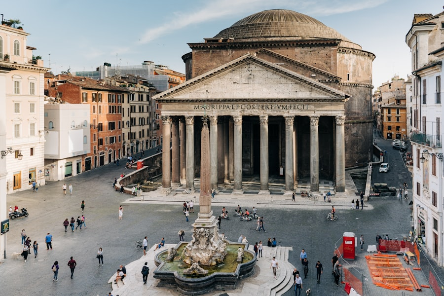
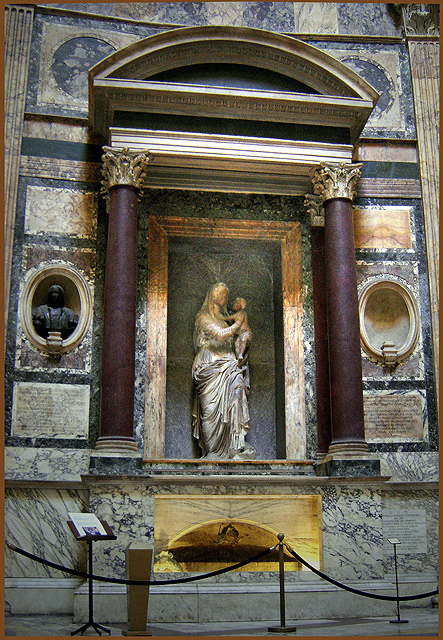
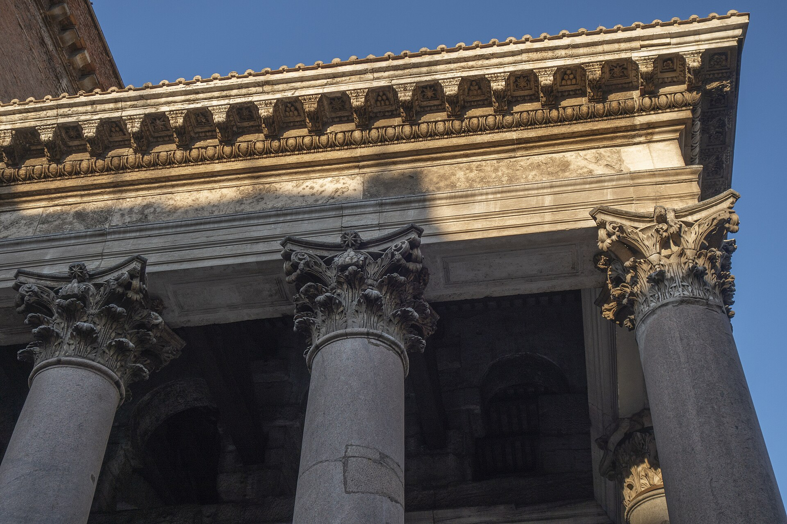
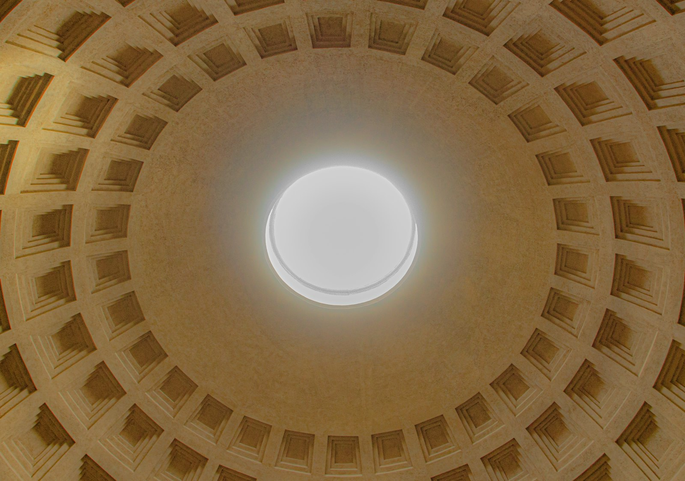

公元 126 年哈德良皇帝时期建成的圆顶神庙，穹顶直径 43.3 米，与高度相等——整个内部空间恰好可容纳一个完美的球体。它以“最完整的古罗马建筑”之身存活至今，是罗马给世界的建筑奇迹。
看点路线
Il Percorso
- 1进门先抬头：找穹顶正中央 8.8 米直径的圆孔 Oculus
- 2晴天正午前后，光柱会随太阳角度扫过室内墙壁——这是建筑自带的“日晷”
- 3右侧第二小堂：拉斐尔之墓；地面找排水孔——雨天 Oculus 真的会下雨
建筑看点
La Cupola · 5 个工程与传说

穹顶与天眼
直径 43.3 米、顶部开孔 8.8 米。混凝土自下而上逐层减重：底部掺重质火山岩，顶部换成轻质浮石，厚度从 6.9 米收薄到 1.2 米——古罗马工程师用“材料梯度”解决了大跨度问题，比钢筋混凝土早了一千八百年。

拉斐尔之墓
文艺复兴三杰中最年轻的一位葬在这里，墓志铭是拉丁诗人本博所撰：“活着，大自然怕被他征服；死了，大自然怕随他而逝。”门票免费的地方埋着无价的灵魂。

门廊的巨柱与铜门
16 根花岗岩巨柱每根约 12 米高、60 吨重，从埃及 quarries 千里迢迢运来。入口两扇青铜门是古代原物（虽经修复）——两千年里每一次推开，都是同一段历史在响。
为什么它活了下来
万神殿是极少数“功能从未中断”的古罗马建筑：609 年拜占庭皇帝将它赠与教皇，改造成献给圣母与殉道者的教堂。被“神学收编”，反而躲过了采石场的命运——宗教救建筑，罗马的第二次上演。

雨中奇观
穹顶开孔意味着雨会落进殿内——地面原有 22 个隐蔽排水孔至今仍工作。小雨时雨滴在光柱中飘散，像一场缓慢的灯光秀；古罗马人连排水都排得优雅。
历史故事
Le Storie
壹穹顶的工程学
万神殿的穹顶让后世所有建筑师又爱又恨：一千八百年里无人能复制，直到混凝土配筋时代来临。米开朗基罗设计圣彼得穹顶前反复来此测量，结论是“天使的设计，而非人类的”--他后来把圣彼得穹顶直径定得比万神殿小一点，以示敬意。
秘密一半在材料：罗马混凝土用那不勒斯湾的火山灰调浆，抗拉与自愈性能远超现代波特兰水泥，近年材料学研究甚至发现其中的晶体成分会“越裂越补”。另一半在结构：穹顶内部的阶梯状格子（coffer）既减重又是视觉魔术。
穹顶圆孔的边缘曾覆镀金铜瓦，阳光射入时整束光带金边。今天正午光柱扫过墙壁的瞬间，依然是罗马最免费、也最奢侈的演出。
贰巴贝里尼的剪刀
17 世纪，教皇乌尔班八世（巴贝里尼家族）下令拆走门廊天花板上的镀金青铜件--传说用来铸造圣彼得大教堂的青铜华盖，以及圣天使堡的大炮。罗马人怒而编了一句流传至今的段子：“野蛮人没干的事，巴贝里尼干了。”
讽刺的是，后世考证：华盖的青铜其实主要来自威尼斯运来的战利舰，万神殿的青铜大部分真造了 cannon--但段子早已跑赢了考据。
这段公案给罗马留下一条建筑伦理底线：此后再无人敢明目张胆拆古代建筑。帕拉蒂尼山上巴贝里尼家族对手广场的遗迹至今残缺，罗马人记得这笔账。
叁拉斐尔长眠于此
1520 年 4 月 6 日，37 岁的拉斐尔在耶稣受难日发烧去世。全罗马为他戴孝：教廷的画家、他的学生与四位红衣主教抬棺，把他葬在万神殿。
墓志铭由拉丁诗人本博撰写：“活着，大自然怕被他征服；死了，大自然怕随他而逝。”他终身未娶--订了婚，据说心里另有面包师的女儿“福纳琳娜”。
右侧第二小堂。很多游客与整个文艺复兴擦肩而过，就为在这里安静站一分钟。
肆“万神”到底是什么神
万神殿（Pantheon）= 全部的神。公元前 27-25 年阿格里帕始建，传说为纪念屋大维在亚克兴海战击败安东尼与克利奥帕特拉--把“所有神”装进一间屋，也是政治宣言：帝国兼容一切信仰。
公元 80 年火灾与 110 年雷击后重建，今天的建筑主体是哈德良皇帝时代的作品。哈德良保留了阿格里帕的名字刻在门楣上--一位皇帝对另一位政治家的谦逊，罕见地持续了一千九百年。
看门楣铭文时记住：那行字属于公元前，穹顶属于公元后，一栋建筑里装着两个黄金时代。
伍609 年的“改宗”
公元 609 年，拜占庭皇帝福卡斯把万神殿赠与教皇卜尼法斯四世。教皇将它献给“圣母与诸殉道者”，传说动用了 28 辆车，把卡塔孔布地下墓穴的殉道者遗骨迁入殿内。
正是这次“神学收编”让万神殿躲过了采石场的命运--从异教的明星建筑变成教堂，它从“被拆名单”划进了“保护名单”。
罗马的第二次上演同一部戏：宗教救建筑。广场上的棕榈与殉道者节，是这个转变的千年纪念。
陆国王们的地下室
意大利统一后，开国国王维托里奥·埃马努埃莱二世（1878 年逝世）葬在万神殿主祭坛右侧；1900 年遇刺的翁贝托一世在他身旁。两块铜碑、两束常年更换的鲜花。
一位把自己葬进“所有神的殿”的国王，等于宣告：统一意大利的世俗叙事，接过了古代与教会的接力棒。
注意看维托里奥墓上那个今日仍每日站岗的仪仗（意大利共和国荣誉卫队换岗时）--一个王朝的谢幕礼，办成了日常风景。
柒玫瑰雨
每年五旬节（复活节后第 50 天），万神殿会举行延续数百年的仪式：消防员登上穹顶圆孔，向下撒下数万片玫瑰花瓣。
花瓣穿过 8.8 米的圆孔飘落，在光柱中旋转--殿内的人仰头伸手，像在一场倒着下的雪里。罗马人叫它“玫瑰雨”。
时间通常在弥撒后、上午十点左右。如果你的行程恰好撞上，请取消上午的其他安排。
捌光柱的日历
穹顶圆孔是这座建筑唯一的窗，也是一座日晷：光柱的落点随季节移动，冬低夏高，正午时扫过穹顶内壁与地面。
有研究者指出：4 月 21 日罗马建城纪念日，光柱会以特定角度照在入口拱门上--皇帝们选在这个日子进城，走进光里，等于走进建城神话。
不用记住角度数据。只要在晴天正午站到殿中央，抬头：两千年前的建筑设计，现在仍然每天准时上钟。
玖门廊的“错位”之谜
从侧面看万神殿会发现怪事：门廊比圆厅低、柱廊后“后脑勺”凸出一截砖构--像两个时代的建筑拼在一起。学者为此争论了两百年。
主流猜想：哈德良重建时利用了阿格里帕旧门廊的基座，设计中途变更（或材料供货问题），导致比例“错位”。另一种戏剧性假说：先建圆厅、后建门廊，两期工程的接口没能对齐。
绕到殿后看那个巨大的砖“后脑勺”：那是穹顶分次浇筑留下的“年轮”，也是这栋建筑最诚实的剖面。
拾文艺复兴的“取经团”
布鲁内莱斯基与多纳泰罗年轻时结伴来罗马“挖古董”，据说曾因拿着工具在废墟转悠被当成寻宝人。万神殿是他们最重要的课堂：量柱径、抄柱式、数格子。
后来布鲁内莱斯基在佛罗伦萨砌起了 45 米的穹顶--比万神殿大两米，用了一套自己的砌法。师徒俩当年在万神殿地上的炭笔涂鸦，成了文艺复兴的“启蒙作业”。
万神殿没有教他们公式，教的是信心：人可以把不可能的跨度举到天上。
参观贴士
Consigli Pratici
- 免费入场，但旺季（4-10 月）门口排队不短，赶早 9 点开门或傍晚 17 点后
- 晴天 11:00-13:00 光柱效果最佳；雨天反而能看到“殿内下雨”奇观
- 殿内是正常运作教堂，保持安静，弥撒时段部分区域封闭
- 广场周边咖啡店宰客出名（著名的那家“坐下来就 €20”），拍完照去隔壁巷子喝
顺路同游
Da Non Perdere